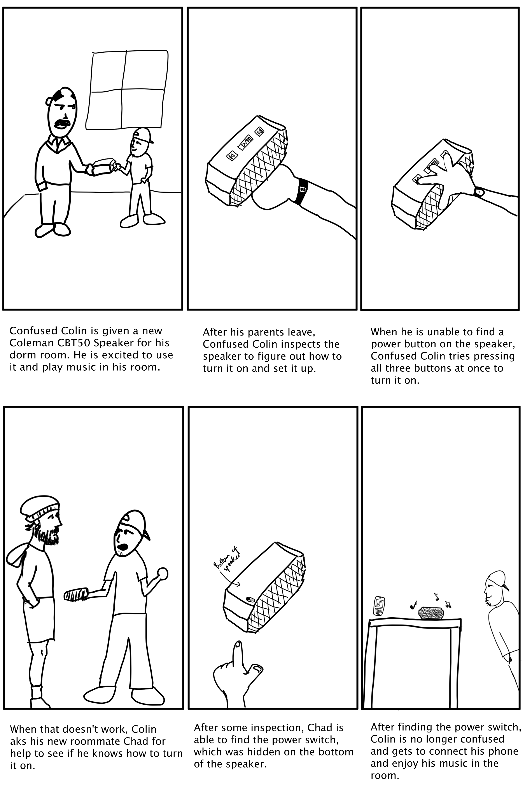

Personas Project
I was curious about the effectiveness of the design of one of my speakers. I remembered having a difficult time understanding how to use it when I first bought it, and I wanted to see if others' experiences with the speaker would mirror my own.
The Interface
The interface in question is the Coleman CBT50 portable bluetooth speaker. A sketch of the speaker can be found below. The interface consists of a total of 3 buttons and a switch. The three buttons on the top are used for the Skip-Backward, Play/Pause, and Skip-Forward operations. The switch, located on the bottom of the speaker, is used primarily for turning the speaker On and Off, along with setting it to pairing mode.

The Experiment
In order to better understand other people's interactions with the bluetooth speaker interface, I designed a set of interview questions that would help capture the users' experiences. My plan was to bring the speaker to a party and observe as different people tried connecting their respective phones to the speaker. Once each user had finished interacting with the speaker, I interviewed them in an attempt to capture the parts of the interface interaction that had stuck out to them. My interview questions can be found below:
-
Which of these 4 statements best describes your experience with connecting your phone to the bluetooth
speaker?
- Connecting my phone to the bluetooth speaker was easy and I encountered no difficulties.
- Connecting my phone to the bluetooth speaker was somewhat easy but I was slightly confused and encountered some difficulties.
- Connecting my phone to the bluetooth speaker was hard and I had significant difficulties with the interface.
- I was not able to connect my phone to the bluetooth speaker. The interface was too difficult to understand.
-
What was the biggest challenge you faced when connecting your phone to the bluetooth speaker?
- Open Response
-
If you were given the opportunity to change one thing about the design of the speaker, what would you
change?
- Open Response
The Observations
Overall, all three users took some time initially to figure out how to turn the speaker on. Two users spent about a minute repeatedly pressing the play button at the top and checking their phones to see if that had turned the speaker on and made it available to pair. The third user tried pressing all the buttons at the top of the speaker (play, skip-forward, skip-backward) to turn on the speaker. After about a minute of playing around with the speaker, all users were able to find the power switch at the bottom of the speaker. Once each person figured out how to turn the speaker on, the connection process was similar for the first two users as the speaker audibly went into pairing mode and they were able to connect to it via the bluetooth screen on their respective phones. The third user was able to get the speaker into pairing mode, but as they went to connect via their phone, the speaker ran out of battery. This user spent the next few minutes trying to figure out what was wrong with the speaker after he was unable to connect, and eventually got frustrated and gave up.
The Interviews
Below are the summarized important points from the various interviews I conducted. These are meant to highlight the general patterns between the experiences of different users.
-
Which of these 4 statements best describes your experience with connecting your phone to the bluetooth
speaker?
- Users described the experience of connecting their phones to the speaker as hard, and they experienced difficulties when interacting with the speaker’s interface.
-
What was the biggest challenge you faced when connecting your phone to the bluetooth speaker?
- Generally, users’ biggest challenge was figuring out how to get the speaker to power up and get into pairing mode.
- One user felt the most significant challenge was understanding the status of the speaker, as it had run out of charge while they tried to connect.
-
If you were given the opportunity to change one thing about the design of the speaker, what would you
change?
- Generally, users felt the change would be to move the power switch to the top of the speaker so it is more accessible.
The Personas
Below are the personas I developed representing potential users of the bluetooth speaker based upon my observations of the various users' interactions with the speaker.


The Storyboard
Below is an example storyboard for a user's journey with the product. This storyboard is based upon a persona found in the previous section, specifically Confused Colin.
